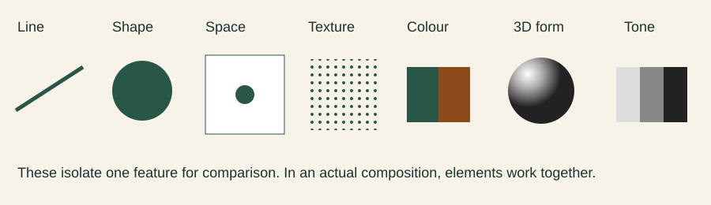

Explain every element through a design choice
Unit 1 · supplementary worked evidence. Read the chapter explanation first.
Worked decisions
Fictional repair café brief: residents must find what to bring, the date, venue and next action. The decisions below model reasoning; they are not observed learner results.
| Focus | Decision and explanation |
|---|---|
| Line | A thin rule separates event information from the action panel; its direction guides attention. |
| Shape | A circular repair icon categorises the activity without pretending to show depth. |
| Space | A clear margin around the venue prevents collision with the illustration. |
| Texture | A subtle paper pattern suggests a handmade context; keep it out of small text. |
| Colour | Green identifies the event theme; add text labels so colour is not the only cue. |
| 3D form | A shaded sphere suggests volume through highlight and shadow; an unshaded circle primarily shows shape. |
| Tone | Dark text against a pale panel creates a light–dark difference independent of hue. |

Apply independently
Create seven small annotated variants of the supplied poster or your own original design, each changing one named element. Compare the result at the intended phone size; keep content constant so the changed element can be discussed.
Use this as part of the existing chapter task, not an additional assessed project or extra lesson. Predict outcomes, create/inspect the required output and record the actual result.
Evidence to retain
- Name all seven elements and locate each in the actual output.
- Explain one intended effect and one possible readability cost for each change.
- Distinguish 2D shape, apparent volume, colour and light–dark tone.
Teacher/classroom performance is unverified until the learner actually performs the task. No SCSA approval is implied.